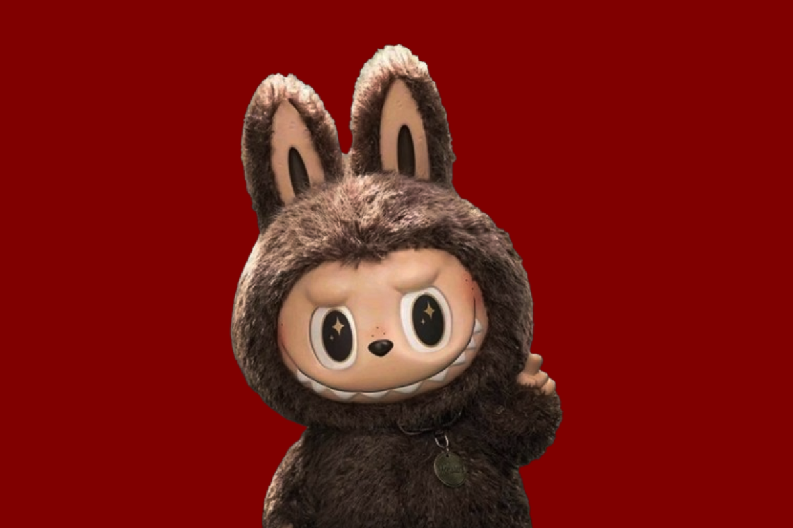

في وقتنا الحالي، نرى كثيرًا من الناس يتخلون عن هوياتهم الحقيقية فقط من أجل مواكبة "الموجة" أو "الترند"؛ فهم مستعدون للتخلي عن أذواقهم الخاصة لأجل ألّا يراهم العالم بنَظرةِ "التقليديين" أو "غير العصريين". هذا الأمر يدفعنا للسؤال حتمًا: هل نحن من نصنع الترند أم أن الترند هو من يعيد صناعتنا؟ فنحن الآن في قلب عصرٍ كاملٍ أصبح فيه الإنسان مستعدًا لتبديل ذوقه ولغته وملامحه وعاداته وحتى قناعاته بمجرد ظهور "موجة" جديدة على السطح؛ يجب أن يركبها قبل أن تغرقه، وكأن كل شيء الآن أصبح محكومًا ويُدارُ كُليًا من قبل صناع المحتوى والترندات. ولِمناقشة تأثير "الترند" على المجتمع، سنتناوله في أربعة محاور أساسية: المحور الأول: الهوية الشخصية أصبحت موضة موسمية هذا أول صراع يخوضه الإنسان، صراع هويته الفردية مع تلك الجماعية المحكومة من قبل الترندات وَصناع المحتوى، حيث يميل لتغيير الكثير من نفسه وهيئته داخليًا وخارجيًا كي يبقى مع القطيع، فأصبحت الأذواق متشابهة بكل شيء حتى إن لم يكن الفرد مقتنعًا بها كفاية؛ فنجد الرجال والنساء ميّالينَ لترك عاداتهم الأصيلة وَتلك الأخلاقيات التي تربوا عليها، فتنتشر العادات الدخيلة بأنواعها حتى وإن كانت منافيةً للبيئة التي تنتشر فيها. ليس بالضرورة أن يقتنع المجتمع بهذه العادات والسلوكيات، إذ أن مخالفة الموجة أصعب من اتباعها؛ فَيحاربها البعض بكل قواهم والبعض الآخر يتقبلها تحت مبدأ (حرية شخصية) -حتى يبدو "منفتحًا" Open-minded-. ومثالٌ على ذلك هو الاهتمام المفرط بالشكل الخارجي، ونرى سباقًا محمومًا على عمليات التجميل، إذ أصبحت زيادة الإقبال للحصول على ملامح تشبه مؤثرة أو ممثلة معينة هي الهدف الأساسي والترند المسيطر على عمليات التجميل منذ الأزل. ليس بالضرورة أن يكون هذا نابع من رغبة شخصية، وإنما أيضاً تساهم الحملات التسويقية ووسائل التواصل الاجتماعي بترسيخ الفكرة، على سبيل المثال هناك فكرة أن تغيير ملامح الفتاة أو إجراء بعض التعديلات التجميلية قبل دخولها للجامعة أو قبل زواجها أو حتى كي تحصل على ثقة أكبر بنفسها، وكأن القبول الاجتماعي أصبح مختصرًا على الالتزام بمعايير تجميلية رائجة، فهنا تتحول الحاجة النفسية إلى سوق مربح، إضافة إلى فشل الكثير من عمليات التجميل ووقوع ضحايا أكثر لها. المحور الثاني: التخلي عن الإرث نجد في يومنا هذا أن من يتمسكون بالإرث الثقافي قليلون، تلك الملابس التراثية والحرف اليدوية واللهجات والفولكلور الشعبي الخاص بكل دولة أصبحت وكأنها مدونة بِقَلَمٍ قابلٍ للمحو، فهو لا يُنقل ولا يُتقبل إذا لم يصبح ترندًا مقبولاً عالميًا، كما شاهدنا الجدل على افتتاح كأس العالم نسخة 2026، الذي قارنوه بكأس العالم نسخة 2022، وكيف أن دولة قطر استغلت الأنظار التي توجهت نحوها حتى تبرز ثقافتها العربية بشكل أكبر، وهذا ما شاهدناه من خلال شكل تميمة الحظ التي كانت عبارة عن شماغ قطري، أو حتى في لحظة تتويج الأرجنتين فائزة رأينا كيف أنهم ألبسوا ميسي البشت العربي، وكأنهم يرفعون من تراثهم على أنه شيء كبير وثمين كجائزة في نهاية اللعبة. هذا فقط مثال من بين كل الحالات التي نراها، كان ذلك تأثير الموجة على الماضي. أمّا تأثيرها على حاضرنا ومستقبلنا، فهنا توجد نقطة محورية في هذا التأثير، حيث لا تتهمش ثقافتهم وماضيهم فحسب، بل يصل التهميش إلى الوقت الحالي؛ فتجد توجهات الجيل الجديد مالت نحو أن يصبحوا صانعي محتوى على مواقع التواصل الاجتماعي، أو فتح البثوث وكسب المال منها، فنرى كثيرا من المراهقين أو حتى الأطفال يصبح طموحهم التوجه نحو صناعة المحتوى وأن يصبحوا (YouTubers أو Tiktokers أو Streamers)، يتبعون بذلك خطى بعض صناع المحتوى الذين تملكتهم الشهرة في الوقت الحالي على الرغم من أنهم ممكن لا يقدمون محتوى هادف ومفيد، فهوية الفرد علميًا وأدبيًا وتراثيًا أصبحت ركيكة، والوصول إلى الشهرة أصبح هدفًا يطغى على الطموحات العلمية والمهنية. ولا بد للإشارة إلى أن الشهرة هي سلاح ذو حدين، وإن الشهرة لا تعني مستقبل مستقر للفرد، خصوصًا إذا كانت مبنية على أساس اتباع الترندات. إن الإنسان، إن كان راغبًا بالشهرة إلى ذلك الحد، كان عليه أن يتعلم ويصنع إنجازه الخاص ويشتهر في مجاله أو يصبح صانع محتوى هادف، كما هو حال كثير من صانعي المحتوى الذين لم تغرهم الموجات بل كانوا ثابتين على بناء محتوى هادف ورائع. المحور الثالث: حين أصبحت الهوية سلعة نرى الآن أن الشركات أصبحت تتداول "الترندات" لسببين؛ الأول عقلية المستهلك والثاني شعور المستهلك. حيث إن المستهلكين في وقتنا الحالي أصبحوا يتفاخرون بشراء شيء يعود لترند معين، ولا يجدون فيه أي مشكلة إن أنفقوا المال عليه فنجد جميع الشركات، في كل المجالات كالتجميل والغذاء والترفيه وحتى المطاعم، تستغل ظهور ترند معين بظهورها معه (تعاون) لزيادة مبيعاتها. وكما هو الحال الذي حدث في إفتتاحية كأس العالم نسخة 2026، الذي تحدثت عنه في المحور السابق، حيث أن إحدى الشركات، الدمية تلك، شاركت لتمويل كأس العالم، لهذا وجدنا ظهورها المفاجئ في أكثر من موضع (الأغاني أو في الافتتاحية نفسها). أما شعور المستهلك، فهو مرتبط بعقلية البشر والتأثير المؤقت لترند معين، فنحن الآن لا نشتري دمية لأنها جميلة أو كوبًا لأننا نحتاجه، بل نملكها فقط لأننا رأينا بعض الناس يحملونهم في الصور؛ نحن نشتري ذلك الشعور الذي يأتي معه شعور إننا داخل ترند معين (ضمن قطيع معين)، الذي يمكن أن يُشعِرُنا بالانتماء لِفصيلةٍ مُعينةٍ. هذا ما جعل الناس يستهلكون بلا حاجة فعلية؛ فأصبحت قيمة الأشياء لا تقاس بما تقدمه لنا بل بعدد المهووسين بها. المحور الرابع: كيف تحول الإنسان من متفرد إلى أحد النُسَخ في السابق كان الفرد يُعرف بأفكاره أو أخلاقه أو حتى أصالته؛ أما اليوم يُعرف بما يُظهِرَهُ على صفحته في أي تطبيق من تطبيقات التواصل الاجتماعي حيث أن منشوراته أو المنشورات التي يعيد نشرها (Repost) تجعلها هوية له وتعبيرًا صريحًا عنه شخصيًا، فلا يظهر هو إلا كواحد من بين آلاف الناس الذين أعادوا نشر نفس المقطع الذي يحمل نفس الصفة أو نفس الشعور، فَهُنا هو يظهر كنسخةٍ من مجموعة، في بعض الأحيان أنه ليس سببه أن يشارك الشعور أو الصفة مع آخرين غيره، وإنما بسبب الموجات التي تسيطر على العالم لا أكثر، فَأصبح من السهلِ جدًا معرفة ما هو الرائج فقط برؤية أشخاص يرتدون نفس الملابس أو يستعملون الكلمات ذاتها أو حتى يصورون الصور نفسها، وكأن البشرية أصبحت تُطَّبِقُ تحديثًا جماعيًا كل أسبوع! التأثير الذي يمكن أن تجلبه الموجة معها بعض الأحيان يصبح سلبي جدًا على النفس، خاصة على بعض المراهقين في كل أنحاء العالم، ويجب مراعاتهم ومتابعتهم بطول بال وفهم عميق. الخاتمة: من يدفع الثمن يجب التنويه أن المشكلة ليست مواكبة العصر بما يحدثه من أساليب مفيدة ومناسبة للأُمة، ولكن بالانتباه التام ألّا نجعل هويتنا الأساسية وجذورها العريقة هي الثمن الذي ندفعه حتى نركب الموجة؛ فَالترند ينتهي بحلول نهاية نزوته وتلك النشوة التي يجلبها معه ولكن الأُمم التي تنسى نفسها وأصلها لن تعود بسهولة. كل ما بيدنا فعله هو التمسك بيد الماضي، بِيَدِ تِلكَ الحضارة والثقافة العريقة وتقديمها للمستقبل بكل فخر؛ فلست أخشى أن يعرف الأطفال أو الشباب الترندات وأسماء المشاهير ويحفِظُوها عن ظهر قلب، لأنها أشياء ستذبل وتموت كما ذبل قبلها الكثيرون، ولكن ما أخشاه حقا أن يكبروا وهم لا يعرفون تاريخ بلدهم أو يعجزون عن أن يُسموا شاعرًا من بلدهم أو رواية الحكاية التي صنعت هوية مدينتهم وغيرها. وأوَدُّ الإشارة إلى أن التغيير أمر طبيعي، والثقافات تتأثر ببعضها منذ الأزل، وليس هناك مشكلة بالانفتاح؛ بل في أن يصبح الإنسان مستعدًا للتخلي عَمّا يُميزه فقط، حتى لا يشعر أنه خارج السِرب، قد تنتهي الترندات كما انتهى الكثير من قبلها، لكن الهوية التي تضيع بسببها لا يمكن تعويضها أبدًا لذلك، أخطر ما يمكن أن يخسره الإنسان ليس ماله أو وقته... بل هو شيءٌ لا يمكن شراؤه مرة أخرى: هويته!
